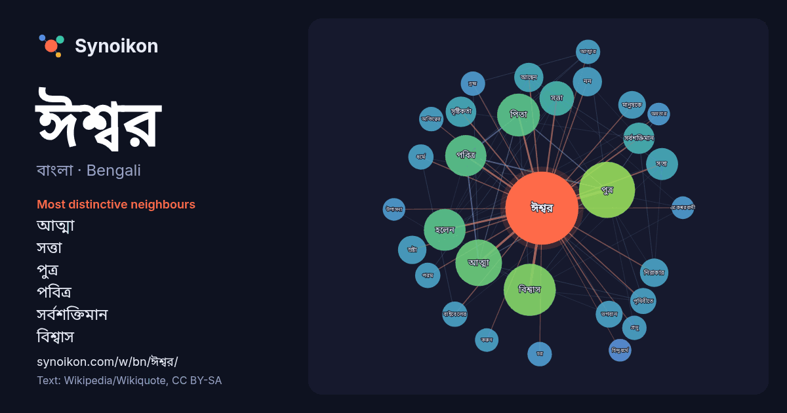

বাংলা · Bengali · popular word
ঈশ্বর
“god” · The words found around it in 1538 instances from Bengali Wikipedia, Wikiquote.

Most distinctive neighbours
- আত্মা 38×
- সত্তা 24×
- পুত্র 23×
- পবিত্র 23×
- সর্বশক্তিমান 23×
- বিশ্বাস 21×
- সৃষ্টিকর্তা 21×
- নিরাকার 19×
- স্রষ্টা 17×
- নন 16×
- ভগবান 15×
- পিতা 15×
- সত্য 15×
- বাইবেলের 14×
- ব্রহ্ম 13×
- প্রভু 13×
- হলেন 13×
- মানুষকে 13×
- চর 13×
- অস্তিত্বের 13×
× = how many times more often than in general Bengali Wikipedia text.
Most frequent neighbours
- পুত্র 74
- বিশ্বাস 64
- আত্মা 51
- অর্থ 44
- পিতা 43
- হলেন 41
- পবিত্র 40
- একজন 38
- মানুষ 35
- সত্তা 28
- ব্যক্তি 25
- সৃষ্টি 25
- ধারণা 24
- সত্য 24
- সর্বশক্তিমান 23
- অর্থাৎ 22
- নাম 22
- মানুষের 22
- সৃষ্টিকর্তা 22
- আছেন 20
In context
- ঈশ্বর হলেন সর্বোচ্চ সত্তা, স্রষ্টা এবং বিশ্বাসের প্রধান অভিপ্রায়। ঈশ্বর সাধারণত সর্বশক্তিমান, সর্বজ্ঞ, সর্বত্র বিরাজমান, সর্বজনীন ও নিরাকার। ঈশ্বরের Wikipedia snippets · ঈশ্বর
- ঈশ্বর (সংস্কৃত: ईश्वर) সনাতন ধর্মের এমন বিষয়, যার সময়কাল ও শাখাভেদে বহু অর্থ প্রচলিত রয়েছে। সনাতন ধর্মের গ্রন্থানুসারে, এই ঈশ্বর নানান রূপের হতে পারে। Wikipedia snippets · ঈশ্বর (হিন্দু দর্শন)
- ঘাটতি বা শুন্যস্থানকেই ঈশ্বর দিয়ে ব্যাখ্যা করা যায়। এই প্রক্রিয়াটি খ্রিষ্টান ধার্মিকদের মস্তিষ্কপ্রসূত। এর মাধ্যমে তারা ঈশ্বরের অস্তিত্বের প্রমাণ দেন। Wikipedia snippets · শুন্যস্থানের ঈশ্বর
- জিনস (অর্থাৎ "ঈশ্বর বংশাণু: কীভাবে ধর্মীয় বিশ্বাস বংশাণুর ভেতরে গ্রথিত") নামক গ্রন্থে বংশাণুবিজ্ঞানী ডিন হামার ধারণাটি প্রস্তাব করেন। ঈশ্বর বংশাণু ধারণাটি Wikipedia snippets · ঈশ্বর বংশাণু
- শক্তিমান এক ঈশ্বর), এলোওয়াহ্ (সৃষ্টিকর্তা), এলোহাই অথবা এলোহেই (আমার ঈশ্বর), এল শাদাই (সর্বশক্তিমান ঈশ্বর) ও সাবিওথ (সর্ব-ক্ষমতাধর)। ঈশ্বরের বাকি নামগুলো Wikipedia snippets · ইহুদিধর্মে ঈশ্বরের নাম
- (যা "ঈশ্বরের পুত্র" সম্বন্ধপদ ফিলিউস দেই থেকে আলাদা), কিন্তু এই বাক্যাংশটিরও অনুবাদ করা হয়েছে এভাবে "সুতরাং পিতা হলেন ঈশ্বর: পুত্র হলেন ঈশ্বর: এবং পবিত্র Wikipedia snippets · পুত্র ঈশ্বর
- পিতা ঈশ্বর হলো বিভিন্ন ধর্মে, বিশেষত খ্রিস্টধর্মে, ঈশ্বরকে সম্বোধনসূচক একটি উপাধি। মূলধারার ত্রিত্ববাদী খ্রিস্টধর্মে, পিতা ঈশ্বরকে ত্রিত্বের প্রথম ব্যক্তি Wikipedia snippets · পিতা ঈশ্বর
- জৈনধর্মে ঈশ্বর ধারণাটি অন্যান্য ধর্মের ঈশ্বর ধারণার তুলনায় অনেকটাই স্বতন্ত্র। জৈনধর্মে ঈশ্বরত্বকে প্রত্যেক আত্মার অন্তর্নিহিত গুণ মনে করা হয়। জৈন বিশ্বাস Wikipedia snippets · জৈনধর্মে ঈশ্বর
More Bengali words
- অরণ্য
- আয়না
- ইতিহাস
- কাজ
- কুকুর
- ক্ষমতা
- খাদ্য
- গান
- গ্রীষ্ম
- ঘড়ি
- ঘণ্টা
- ঘোড়া
- ছায়া
- জননী
- জলবায়ু
- জীবন
- ঝড়
- টাকা
- ট্রেন
- দারুচিনি
- দ্বীপ
- নক্ষত্র
- নীরবতা
- পরিবার
- পানি
- পাহাড়
- প্রকৃতি
- বাগান
- বিজ্ঞান
- বিড়াল
- বৃষ্টি
- ভাষা
- মধু
- মরুভূমি
- মানচিত্র
- মৃত্যু
- রাস্তা
- রুটি
- লবণ
- শরৎ
- শহর
- শিল্প
- শীত
- সত্য
- সময়
- সেতু
- সোনা
- স্বাস্থ্য
- হৃদয়
Precomputed on 2026-10-09 with default settings (±5 words, medium corpus). The interactive map can refresh it with live data.